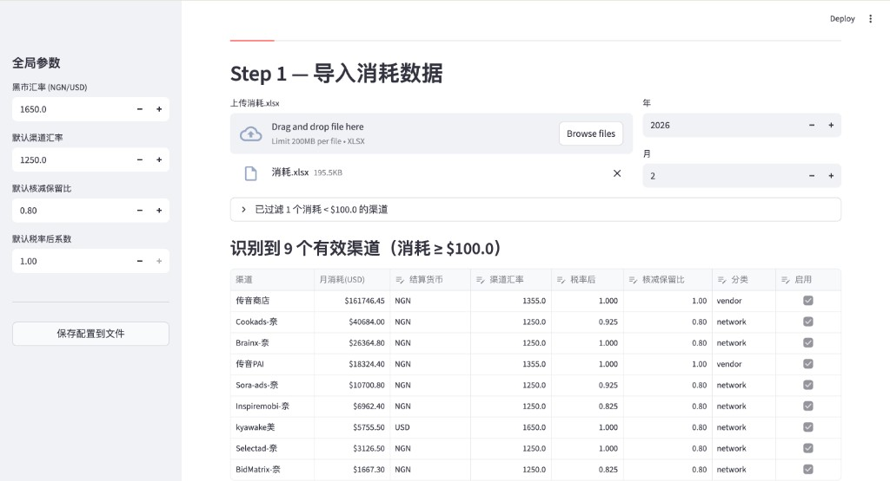
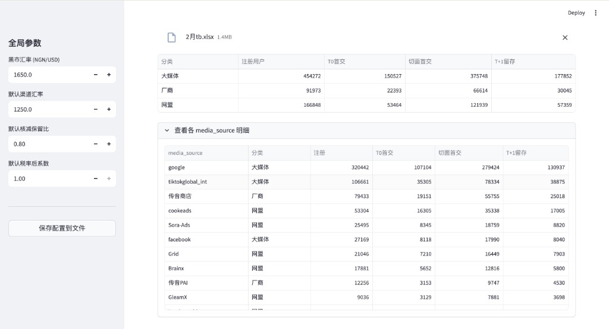
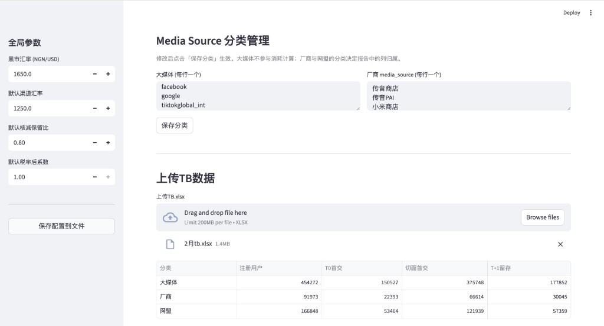
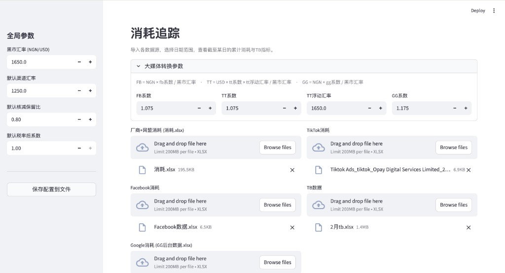
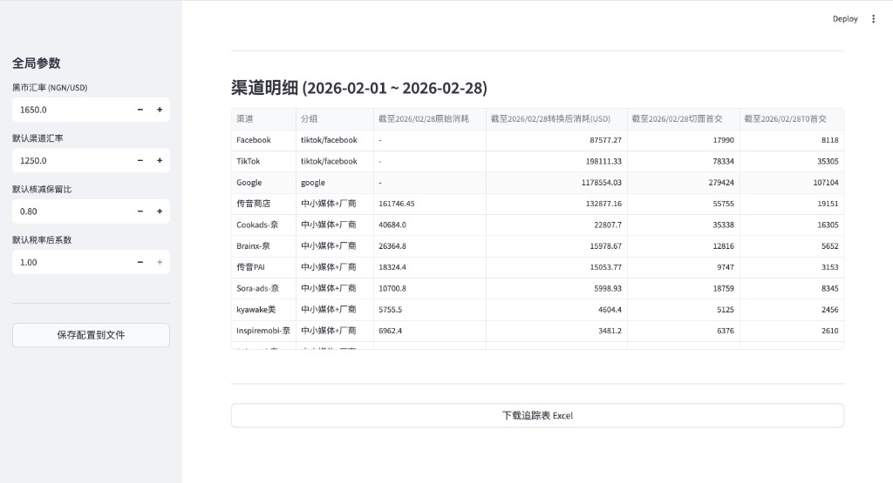

从实习里的模糊业务需求到 AI 小工具：一次「任务光谱」的实践
我在实习里遇到过一个很具体、但一开始非常模糊的问题：我们 App 的主要运营市场在尼日利亚，投放团队会在不同渠道维护不同的飞书在线表格和后台数据；而每个渠道在 App 里的注册、首交、留存表现，又沉淀在内部 TB 系统里。每次想核算某个渠道、或者追踪某段日期的投放效果，都要先确认日期范围，再去各处下载数据、重新聚合、重新分类、重新算一遍。
这个动作本身不难，难的是它每次都要重复。今天看 2 月 1 日到 2 月 7 日，明天可能又要看 2 月 1 日到 2 月 8 日；今天下载的是哪个时间点的数据、某个表有没有覆盖到这几天、某个渠道这次应该归到大媒体还是厂商，时间久了都会变成认知负担。最后人不是卡在某个复杂算法上，而是卡在一堆低价值但必须准确的操作里。
这篇文章记录的，就是我怎么把这个实习里的业务问题，拆成一个可以被 AI 辅助构建、但最终能稳定运行的小工具：业务同事上传几张表，调整少量参数，就能生成月报和消耗追踪结果。
但真正想分享的不是"我做了个工具"，而是中间那个判断过程——尤其是一个有点反直觉的结论：在这个问题里，最关键的一次 AI 决策，是把 LLM 挡在运行时之外。

工具的第一个价值，是把分散在表格和人脑里的渠道规则，变成一张可复核、可调整的参数表。
先别急着上 AI：这个实习问题到底在问什么
在业务现场，问题通常不会以"请你设计一个 ETL 系统"这种形式出现。它更像是："这个月报能不能自动算？""这些渠道规则能不能以后不用每次手改？""能不能做个界面让不懂代码的人也能用？"
这些听起来都像是在问"能不能用 AI 做一个工具"。但如果你顺着这句话直接去想"那我写个 prompt，把 Excel 丢给大模型让它帮我算"，几乎一定会做出一个不稳定的东西——它这个月算对了，下个月换一批数据就悄悄错给你看，而且你还查不出来它哪一步错了。对一个财务口径的计算来说，这是不可接受的。
所以我习惯先把问题换一种问法：
这件事里，哪些该交给程序（确定性），哪些该交给 AI（模糊/语义），哪些必须留给人（判断）？
这就是我一直在用的一个心智模型——任务光谱（task spectrum）。一个需求很少是"纯 AI"或"纯人工"的，它通常是这三段的混合。Builder 的核心功夫，不是会调多牛的模型，而是能把一个需求准确地切成这三段，再让每一段待在它最该待的地方。
下面就用这个框架，把我实习里的这个广告投放月报问题拆开。
第一步：把"算账"还原成一条 ETL 链路
模糊需求的背后，往往藏着一条没有被显式说出来的流程。我做的第一件事，不是写代码，而是找到那张承载了"隐性知识"的参考 Excel，把业务同学在手工月报里默认执行的算法逆向出来。
还原之后，它本质上是一条经典的 ETL（Extract–Transform–Load）：
- Extract（抽取）：从各渠道日报里，取出某个月每个渠道的实际消耗。
- Transform（转换）：这是最复杂的一段，而且是分层的——
- 汇率换算：
消耗 × 渠道汇率 ÷ 黑市汇率 - 扣税：
× 税率后系数（渠道承担的 VAT） - 核减：
× 核减保留比（和渠道谈下来的折扣）
- 汇率换算：
- Load（装载）：把每个渠道的结果，汇总成"大媒体 / 厂商 / 网盟"三类，输出成一张标准报表。
把它写成一个统一的式子，对每个渠道都是：
最终成本(USD) = 原始消耗 × (渠道汇率 / 黑市汇率) × 税率后系数 × 核减保留比
我后来用 2 月的试跑数据跑了一遍，才真正感受到这个问题为什么不能靠手工长期维护：一个月的 消耗.xlsx 里能识别出 10 个渠道，其中 9 个渠道月消耗超过 100 美元；同一个月的 TB 数据里有 73 个不同的 media_source。这还只是一个月。如果每个月都靠人记住"这个渠道汇率是多少、那个渠道税率是多少、这个 media_source 归到哪一类"，迟早会出错。

TB 不是只有一个总数。真正有用的是：先按业务口径聚合，再保留可追溯的 source 明细。
拆解的标准：能不能对应到不同的动作
拆链路不是越细越好。我判断"该不该再拆一层"的标准只有一个：拆出来的两块，是不是对应着两个不同的处理方式。汇率、税、核减之所以要分成三层，正是因为它们的"变与不变"完全不同（见下一节）——如果它们永远一起变，那分层就是多余的。
第二步：给每一块找它该待的位置
链路清楚之后，把它放到任务光谱上，三段就自然浮现了。
确定的部分 → 交给程序，不要交给 LLM
上面那条公式是纯确定性的。同样的输入永远得到同样的输出，对错有唯一标准。这种东西天生属于程序：写成几行 Python，既快、又准、又能复算（auditable）。
这里有个容易踩的坑：很多人会觉得"我都用 AI 了，这点乘除法当然也丢给大模型"。但确定性计算交给 LLM 是纯粹的退步——你用一个会幻觉、不可复算、还要花钱花延迟的东西，去替代一个本来 100% 可靠的乘法。
会变、但有规律的部分 → 做成"带默认值的配置"
接下来是真正麻烦的地方：业务规则会变，而且每个渠道还不一样。
- 传音（Transsion）不参与核减，核减保留比固定是
1.0； - 大部分渠道汇率是
1250，但传音是1355.5； - 税率后系数大多是
1.0，但 COOKE 是0.925、Inspire 是0.825； - 还有按美元结算的渠道（kyawake、Grid），它们根本没有汇率折算这一步。
如果把这些规则硬编码进程序，那这工具就是一次性的——下个月汇率一变就得改代码，业务同学根本没法自己维护。
所以这一段我没有写死，而是抽成了一份配置（带合理默认值）：
global:
black_market_rate: 1650 # 系统黑市汇率
default_channel_rate: 1250 # 默认渠道汇率
default_discount_ratio: 0.8 # 默认核减保留比
channels:
传音商店:
channel_rate: 1355.5
discount_ratio: 1.0 # 传音不核减
kyawake美:
currency: USD
channel_rate: 1650 # 美元结算：汇率=黑市汇率，相除即抵消
这里有个我挺满意的小设计：美元结算渠道，我没有给它写一个 if currency == 'USD' 的特例分支，而是把它的渠道汇率默认设成黑市汇率本身。 这样 1650 / 1650 = 1，汇率那一步自动抵消，公式对所有渠道保持统一。少一个分支，就少一处会出 bug、会让人困惑的地方。
把"会变的"和"不变的"分开，是这一步的灵魂：不变的逻辑沉在代码里，会变的参数浮在配置上。
需要判断的部分 → surface 给人，而不是替人拍板
总有一些东西，规则给不出答案，得人来定。比如：
- 这个月到底有哪些渠道要算（有些消耗几美元的可以直接忽略）；
- 某个渠道这次按什么参数；
- 某个媒体到底归到"厂商"还是"网盟"。
- 追踪数据要看到哪一天，因为业务经常不是等月底才看，而是要看"截至 2 月 7 日"、"截至今天"这种中间状态。
我的处理不是让程序（或 AI）替人决定，而是把这些判断点全部暴露在界面上：自动识别出消耗超过阈值的渠道，把每个渠道的参数用默认值填好、做成一张可编辑的表格，人想改就改、想删就删。
这正好呼应了那条原则——AI / 程序的任务不是"替人拍板"，而是减少人要看的东西，并把最值得人看的东西摆到最前面。 人不用从一百列 Excel 里大海捞针，只需要在一张已经填好默认值的表上，复核几个真正需要他判断的格子。

大媒体、厂商、网盟的分类有默认值，但业务口径变化时，使用者可以自己改。
后来我又加了一个追踪 Tab：因为业务不会只在月底发生
月报解决的是"月底结算"问题，但实习里的真实场景还有另一类需求：过程中就要知道现在花了多少钱、效果怎么样。
这件事如果继续用 Excel 会很麻烦。因为追踪不是固定看月底，而是经常会问：
- 2 月 1 日到 2 月 7 日花了多少？
- 截止今天，大媒体和中小渠道分别消耗多少？
- Google / Facebook / TikTok 的消耗分别在后台表里，TB 又是另一张表，能不能放在一起看？
- 如果今天看 2 月 7 日、明天看 2 月 8 日，是不是每次都要重新下载、重新透视、重新拼表？
所以我在 GUI 里单独做了一个消耗追踪 Tab。它一次导入五类文件：中小渠道消耗、Facebook、Google、TikTok、TB。用户只需要选开始日期和截止日期，工具就会在同一个页面里把消耗和首交指标拼出来。

追踪 Tab 解决的不是"读一张表"，而是把多个后台和飞书表的数据，在一个可选日期范围里重新对齐。
这一步真正的痛点，不是"读 Excel"本身，而是不同来源的时间口径不一样。我用试跑数据跑的时候就发现：
| 数据源 | 日期范围 |
|---|---|
| 中小渠道消耗 | 2023-04-03 到 2026-03-03 |
| 2026-02-01 到 2026-02-28 | |
| 2022-08-01 到 2026-02-28 | |
| TikTok | 2026-02-01 到 2026-02-28 |
| TB | 2026-02-01 到 2026-02-28 |
如果不做校验，一个很隐蔽的问题就会出现：你以为自己在看"2 月 1 日到 2 月 7 日"，但某个数据源其实没有覆盖这个区间，最后结果看起来有数，实际上口径已经歪了。所以我给追踪 Tab 加了日期覆盖提示：某个文件在所选日期里没有数据，或者只覆盖了一部分天数，界面会直接提示出来。
我也把追踪分成了两种视图：
- 明细视图：看到每个渠道 / source，适合排查问题；
- 聚合视图：汇总成
tiktok/facebook、google、中小媒体+厂商，适合给业务看。
用 2 月 1 日到 2 月 7 日的试跑数据跑出来，一个聚合结果大概是这样（金额做了四舍五入）：
| 分组 | 转换后消耗（USD） | 切面首交 | T0 首交 |
|---|---|---|---|
| tiktok/facebook | 约 78.6K | 27,696 | 13,299 |
| 约 347.6K | 72,396 | 27,985 | |
| 中小媒体+厂商 | 约 53.0K | 50,699 | 20,488 |

聚合视图适合汇报，明细视图适合排查。两者切换，才是真正贴合业务使用的形态。
这里面还藏着一个产品细节：分类必须可配置。TB 里的 media_source 不是天然就知道自己属于"大媒体"、"厂商"还是"网盟"。比如 facebook、google、tiktokglobal_int 是大媒体；传音、小米是厂商；剩下的大多归网盟。这个判断有默认值，但不能写死，因为业务口径可能会变。所以我把分类也做成了配置区：默认填好，业务同学需要时可以改。
这就是我对这个 Tab 的理解：它不是一个"多读几张表"的功能，而是在把一个动态的业务问题产品化——日期是可选的，分类是可调的，参数是可改的，口径有校验，结果能在明细和聚合之间切换。
反直觉的结论：最关键的 AI 决策，是把 LLM 挡在运行时之外
走到这里，整个工具里运行时没有一行调用大模型。它就是"程序做确定性计算 + 配置承载可变规则 + 人做最终复核"。
那这还算"AI 工具"吗？
我觉得这恰恰是最值得讲的一点。判断要不要在运行时用 LLM，我用三个维度：
| 维度 | 这个问题的答案 | 结论 |
|---|---|---|
| 任务是语义的，还是确定性的？ | 纯确定性（乘除法） | 不需要 LLM |
| 算错了代价多大？ | 财务数据，错了直接亏钱 | 不能容忍幻觉 |
| 对错能否低成本验证？ | 能，有唯一正确答案 | 更该用确定性程序 |
三个维度全部指向"别在运行时用 LLM"。明明能用 AI，却判断出这里不该用——这本身就是一次 AI 能力边界的判断，而且我认为它比"硬塞一个大模型进去"要成熟得多。
那 AI 在哪？AI 的角色是 builder，不是 runtime。 真正用大模型的地方，是构建这个工具的过程本身：把实习里那个模糊的业务需求、那张缠绕的 Excel、以及不断补充的渠道规则，一步步翻译成结构化的代码、配置和界面。它是"翻译官"和"施工队"，不是"算账先生"。
区分 build-time AI 和 run-time AI，是我从这个小项目里收获最大的一条。很多"AI 落地"之所以不稳，是因为把本该在 build-time 用一次的 AI，错放到了每次运行都要赌一把的 run-time。
怎么证明它算对了：哪怕是确定性工具，也需要"标准答案"
工具能跑 ≠ 工具算对。所以最后一步，是评测。
确定性工具的评测，反而比 AI 系统更干净：它有唯一正确答案。我手里正好有一份以前手工计算、且已被业务采用的结果表，于是它就成了我的 golden dataset（标准答案集）。我让工具跑同一个月的数据，把输出和这张表逐格比对。
- 完全对得上的，说明逻辑还原正确；
- 对不上的，要么是我哪一层公式错了，要么是某个渠道的特例没覆盖到——每一处不一致，都是一条要回去修的线索。
这件事让我意识到："我觉得它对" 和 "我能用一张标准答案证明它对"，是两个完全不同的工程成熟度。 哪怕是最简单的确定性工具，没有这一步，你都不敢把它交给别人用。
最后一公里：让不懂代码的人也能用
工具自己能跑，离"别人能用"还差很远。实习里的真实使用者是业务同学，不一定懂代码，让他们去敲 streamlit run 是不现实的。
所以我又补了两段，把"最后一公里"铺平：
- 把命令行版本升级成一个网页界面（拖文件、点按钮、下载报表），不碰任何代码；
- 写了一个 macOS 上双击即可运行的启动脚本，自动建环境、装依赖、起服务、开浏览器——第一次用的人什么都不用配置。
这一步没什么技术含量，但它是"一个 demo"和"一个真的有人在用的产品"之间的分界线。能不能被一个完全不懂技术的人独立用起来，是检验落地的最硬标准。
收口：一个可复用的判断框架
回头看，这个小工具真正可复用的，不是那几行汇率公式，而是面对"能不能用 AI 做 X"时的那套拆解动作：
- 先把模糊需求还原成一条清晰的链路（这里是 ETL）；
- 把链路铺到任务光谱上：确定的归程序，会变的归配置，要判断的 surface 给人；
- 判断 LLM 该在 build-time 还是 run-time——很多时候，最好的答案是"运行时根本不用"；
- 用一份标准答案证明它真的对；
- 再花力气铺平最后一公里，让不懂技术的人也能独立用起来。
一句话总结，还是那句老话，但我现在更信它了：
确定的自动化，不确定的智能化，关键判断留给人。
而 builder 的价值，就在于准确地划出这三者的边界。
这是我第一个真正用在实习工作场景里的 AI build。写下来，是为了复盘一次把模糊业务需求拆成可交付 AI-assisted workflow 的过程。